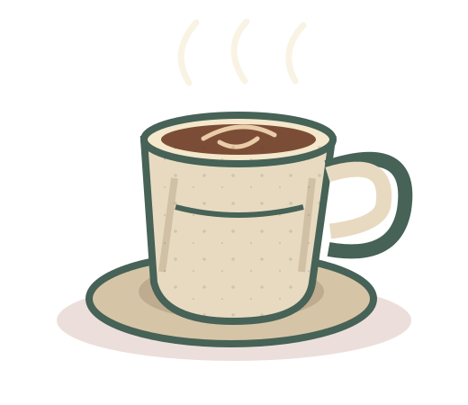
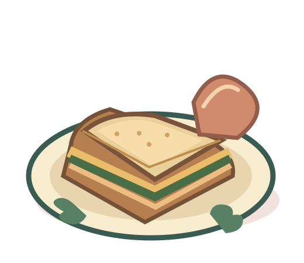
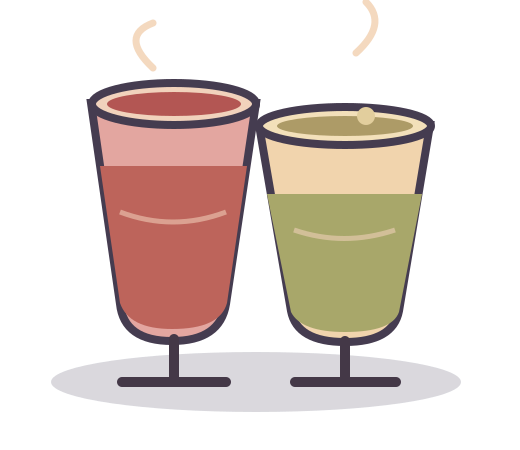
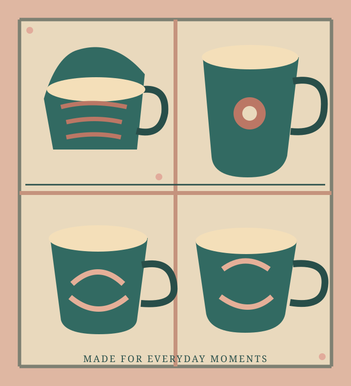

01 / DRINKSAT THE COUNTER

Speciality
coffee.
Carefully made cups and rotating coffee selections from independent roasters.
MADE FOR WITHINGTON · MANCHESTER
Good coffee in good company. A café, bar and neighbourhood gathering place on Egerton Crescent.
The kind of place where the mug feels familiar and so do the people.
Something More Productive is a small, independent speciality coffee shop and bar in the heart of Withington. Local suppliers, handmade ceramics and a changing food offering make it feel properly rooted in the neighbourhood.
Come for a coffee, catch up with a friend, and see what the team has going on. The bar, creative gatherings and coffee sessions make room for a little more.
See the actual café & latest updatesWhatever brought you in today, there's a good reason to stay a little longer. The selection changes, so check the venue's current updates for what's available.

Carefully made cups and rotating coffee selections from independent roasters.

Sandwiches, seasonal food and sweet treats made with local suppliers.

The café's other side: a neighbourhood bar and community events. Check current announcements.
Illustrations show categories, not exact menu items or products. For today's menu, see the venue's own channels.
AN INDEPENDENT WITHINGTON ORIGINAL
Local makers, handmade mugs and a changing calendar of get-togethers. The café's speciality coffee is only part of the story.
Events, courses & updates
A SMALL PLACE WITHOpening times and event schedules can change. Check the café's current social updates before you travel.